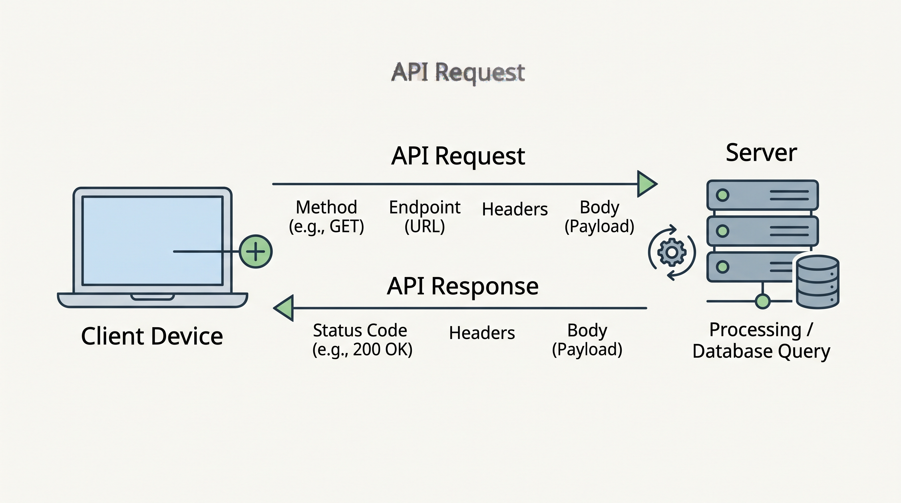

1. Introdução
As Interfaces de Programação de Aplicações (APIs) consolidaram-se como a espinha dorsal da engenharia de software moderna. Em um cenário digital caracterizado pela alta conectividade e pela necessidade de respostas rápidas, as APIs funcionam como pontes padronizadas que permitem a comunicação eficiente entre sistemas distintos, independentemente das linguagens de programação ou infraestruturas em que foram desenvolvidos.

Com a transição das antigas arquiteturas monolíticas para ecossistemas distribuídos, como a arquitetura baseada em microsserviços, o desenvolvimento de software passou a focar na integração contínua. Em vez de construir plataformas massivas do zero, as equipes de desenvolvimento agora orquestram soluções através da união de serviços especializados, garantindo escalabilidade, manutenção simplificada e reutilização de código.
O presente trabalho explora as APIs e suas integrações, detalhando os conceitos técnicos fundamentais, os protocolos arquiteturais adotados pelo mercado e as ferramentas utilizadas no ciclo de desenvolvimento. Além disso, apresenta exemplos de aplicação que ilustram o impacto dessas tecnologias na construção de soluções web contemporâneas.
2. Conceitos, Tipos e Ferramentas
2.1. Conceitos Fundamentais
Uma API estabelece um contrato formal entre o provedor de um serviço e o seu consumidor. Esse contrato define estritamente quais recursos estão disponíveis, como as solicitações devem ser estruturadas e qual formato de resposta será devolvido. A abstração é a principal vantagem desse modelo, pois o consumidor interage com o sistema sem a necessidade de acessar seu código-fonte ou banco de dados.
Na web, a base dessa comunicação é o protocolo HTTP. O ciclo funciona no formato de Requisição-Resposta. Um cliente aciona um "Endpoint" (uma URL específica) utilizando um método HTTP que define a intenção da operação: GET para consultar, POST para inserir, PUT/PATCH para atualizar e DELETE para remover dados. O tráfego dessas informações ocorre geralmente em formatos leves e universais, como o JSON (JavaScript Object Notation), facilitando o processamento em aplicações web e mobile.
2.2. Tipos e Padrões de APIs
Existem diferentes abordagens para a construção de APIs, adaptando-se às necessidades específicas de cada projeto:
- REST (Representational State Transfer): É o padrão predominante na internet. As APIs RESTful são focadas em recursos, utilizando os verbos HTTP de maneira semântica. Uma característica central é ser "stateless", ou seja, cada requisição é independente e deve conter todo o contexto necessário. É amplamente utilizado na construção de back-ends robustos, sendo o padrão preferido em frameworks modernos como o Laravel no ecossistema PHP.
- SOAP (Simple Object Access Protocol): Diferentemente do REST, o SOAP é um protocolo rígido fundamentado em XML. Ele exige contratos altamente definidos através de arquivos WSDL. Por ser mais verboso e demandar mais processamento, é restrito a cenários que exigem altíssimos níveis de segurança transacional, como integrações em instituições financeiras e sistemas governamentais legados.
- GraphQL: Criado como uma evolução para resolver as limitações do REST, como o tráfego de dados desnecessários (over-fetching). O GraphQL atua como uma linguagem de consulta flexível, permitindo que o front-end solicite, em um único endpoint, exatamente a estrutura de dados de que necessita, otimizando o consumo de banda e o desempenho da aplicação.
- Webhooks: Funcionam como APIs orientadas a eventos. Em vez de o cliente fazer requisições constantes para verificar atualizações, o servidor é configurado para enviar ativamente um pacote de dados (payload) para o cliente no exato momento em que um evento gatilho acontece. São cruciais para processos assíncronos e notificações em tempo real.
2.3. Ferramentas de Desenvolvimento e Teste
A criação de integrações seguras exige o uso de ferramentas especializadas que acompanham o ciclo de vida do software:
- Postman e Insomnia: São os clientes HTTP mais utilizados por desenvolvedores para modelar, testar e documentar requisições. Permitem a configuração de cabeçalhos de autenticação, análise estruturada das respostas JSON e a automação de testes de integração antes da implantação do código em produção.
- OpenAPI (Swagger): Um padrão da indústria para a especificação de APIs RESTful. Através de arquivos declarativos, permite gerar interfaces gráficas interativas onde desenvolvedores podem consultar as rotas disponíveis e testar os serviços diretamente pelo navegador, funcionando como uma documentação viva do sistema.
2.4. Exemplos Práticos de Integração
O impacto real das APIs é evidenciado na composição dos modelos de negócios digitais atuais:
- E-commerce e Dropshipping: Operações complexas de varejo online dependem inteiramente de APIs. O processamento de pagamentos, por exemplo, não ocorre no servidor da loja, mas é delegado via API a gateways como Mercado Pago ou Stripe, que gerenciam a transação com os bancos e retornam o status via Webhooks. Adicionalmente, sistemas de dropshipping utilizam integrações com fornecedores globais (como AliExpress) para automatizar a importação de produtos, gestão de estoque e rastreamento logístico em tempo real.
- Autenticação (OAuth): O protocolo OAuth 2.0 viabiliza integrações de login social. Plataformas delegam a autenticação para serviços como Google ou GitHub via API, recebendo tokens seguros sem precisar gerenciar ou armazenar as senhas dos usuários localmente.
3. Conclusão
As APIs transformaram a forma como o software é idealizado e construído. Ao fornecer meios seguros e padronizados para a troca de informações, elas permitiram a ascensão de arquiteturas modulares, reduzindo custos de desenvolvimento e acelerando a inovação tecnológica. Ecossistemas inteiros de comércio eletrônico, logística e serviços financeiros operam sobre essa teia invisível de integrações.
Para o profissional de Análise e Desenvolvimento de Sistemas, a compreensão arquitetural sobre REST, GraphQL e o funcionamento de webhooks é mandatória. O domínio sobre a criação, o consumo e a documentação de APIs capacita o desenvolvedor a estruturar aplicações web resilientes, preparadas para escalar e integrar-se perfeitamente aos mais diversos serviços do mercado moderno.
4. Referências
- FIELDING, Roy Thomas. Architectural Styles and the Design of Network-based Software Architectures. Tese (Doutorado em Ciência da Computação) – University of California, Irvine, 2000.
- RICHARDSON, Leonard; RUBY, Sam. RESTful Web Services: Web services for the real world. O'Reilly Media, 2007.
- LAURET, Arnaud. The Design of Web APIs. Manning Publications, 2019.
- RED HAT. O que é uma API e como ela funciona?. Disponível em: https://www.redhat.com/pt-br/topics/api. Acesso em: 14 ago. 2026.